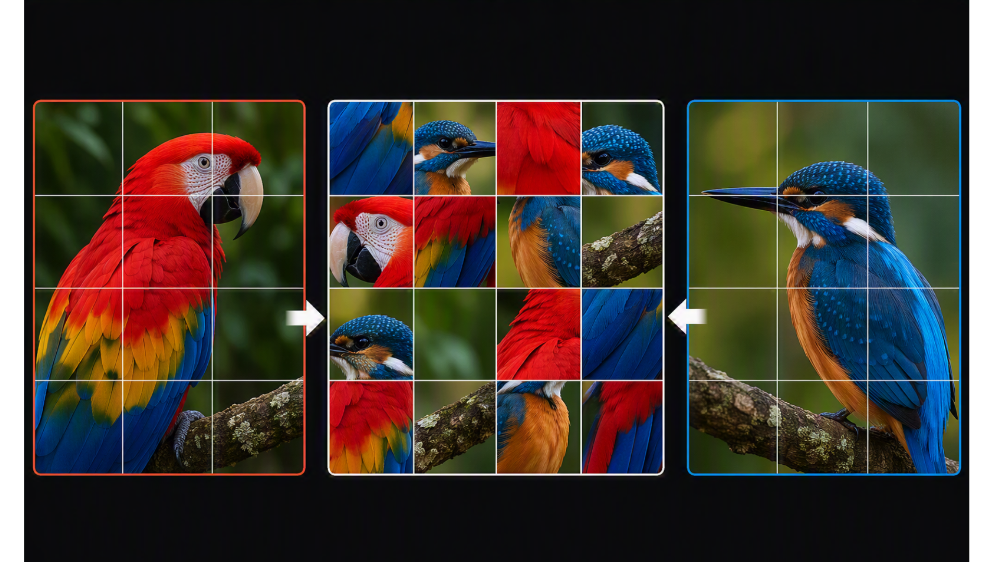
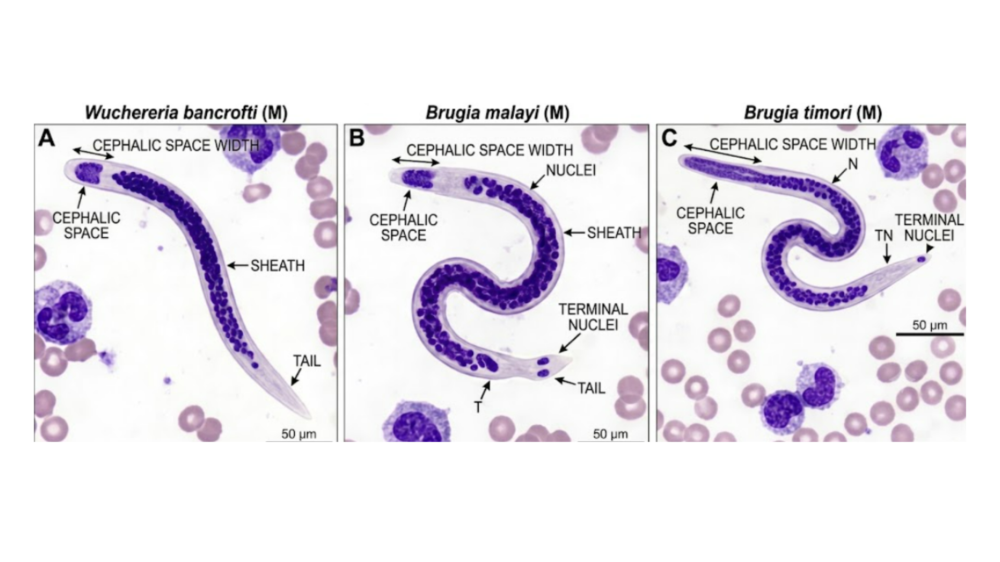
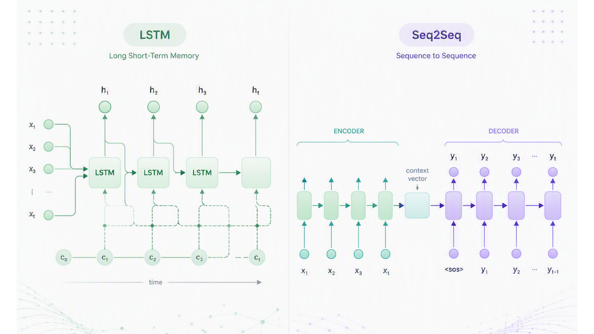
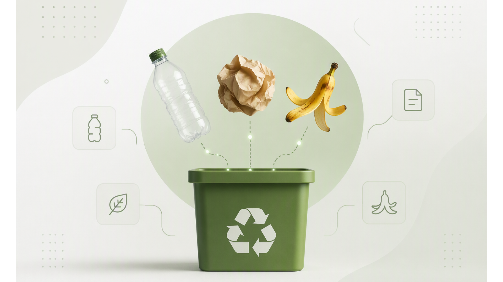
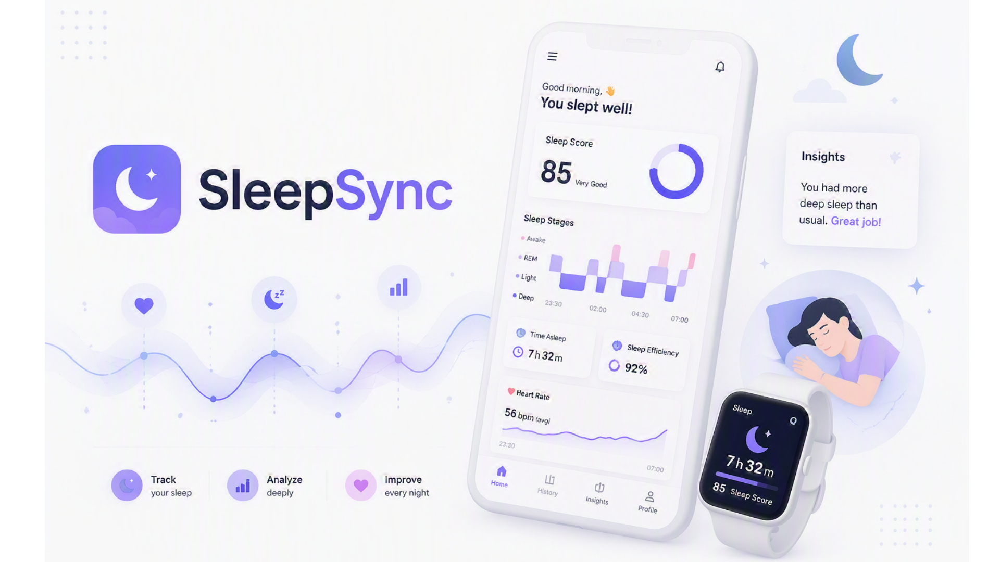
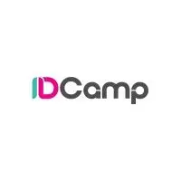

Ariella Asti Cahyani
I am a Computer Science undergraduate at BINUS University, with a focus on Computer Vision and Deep Learning, with growing interest in multimodal and vision-language models. My work sits at the intersection of AI and healthcare, currently exploring density estimation and domain adaptation for medical image analysis — part of a broader interest in how machines can learn to see, understand, and connect information across different types of data.
Beyond research, I'm active in the developer ecosystem as a Core Team member at Google Developer Group on Campus (GDGOC) BiOn. I also drive social impact initiatives at Janji Baik Community, where I provide English and tech literacy education to children from underserved backgrounds.


This study proposes a grid-based masking framework that balances regularization and structural preservation, addressing the limitations of contiguous occlusion in fine-grained recognition.

Developing an automated computer vision pipeline to detect microfilaria parasites in blood-smear images, supporting faster and more accessible lymphatic filariasis screening.

Developed a multivariate Bitcoin forecasting system, comparing a baseline LSTM with a custom Attention-Based Seq2Seq architecture. Achieved improved forecasting accuracy by capturing complex temporal dependencies.

Built a deep learning–based image classification system to identify multiple categories of waste, applying computer vision techniques for automated waste sorting.

Benchmarked IndoBERT against LSTM and GRU on 64K Indonesian reviews, highlighting the effectiveness of Transformer architectures in understanding contextual and informal language.

Developed the AI component of a sleep-tracking platform, supporting sleep analysis and personalized recommendations through an interactive web interface.

Developed an end-to-end Generative AI web application using Stable Diffusion v1.5, enabling advanced image manipulation workflows like inpainting and outpainting within an interactive interface.
Developed machine learning models to classify pulsar star candidates from astronomical observations, transforming complex scientific data into an automated decision-making framework.

Identifies fraudulent patterns within financial transaction logs by analyzing behavioral anomalies to enhance detection accuracy and risk mitigation.

Developed robust classification models to predict loan repayment abilities, addressing severe class imbalance with LightGBM. Through rigorous feature engineering, the model achieved 0.75 AUC-ROC using a streamlined set of the top 50 predictive features.

Segments customer behavior using Unsupervised Learning to identify high-value demographics and drive personalized marketing strategies through RFM analysis.

Develops an interactive credit scoring application using Streamlit to provide real-time risk assessment and automated, data-driven loan approval decisions.

Analyzes movie characteristics to identify the most significant factors influencing audience scores and evaluates their predictive power through statistical modeling.

Designed comprehensive problem sets and educational content for high school students. Focused on simplifying complex STEM concepts to improve student engagement and understanding.

Taught English and basic tech literacy to children from underserved communities, designing engaging lesson plans that made learning approachable and fun while nurturing long-term confidence.

